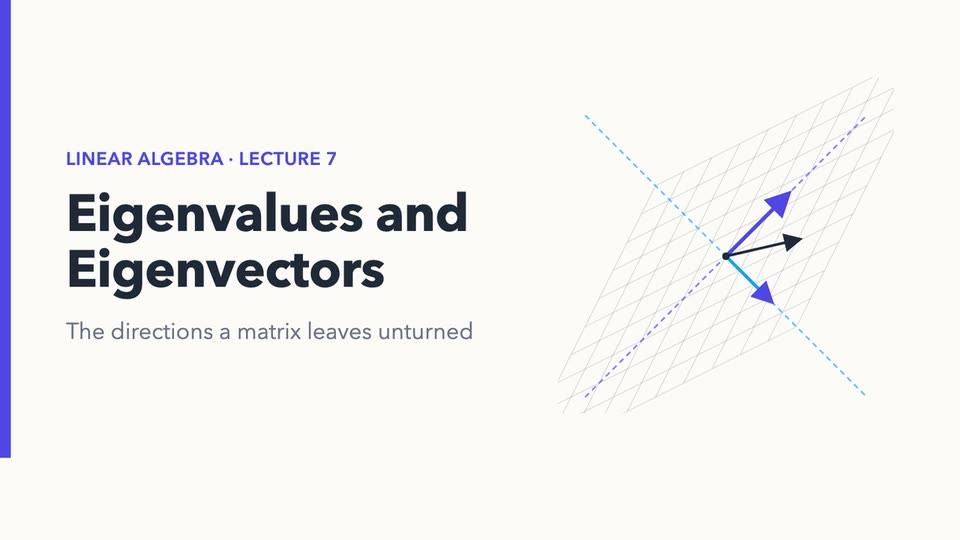
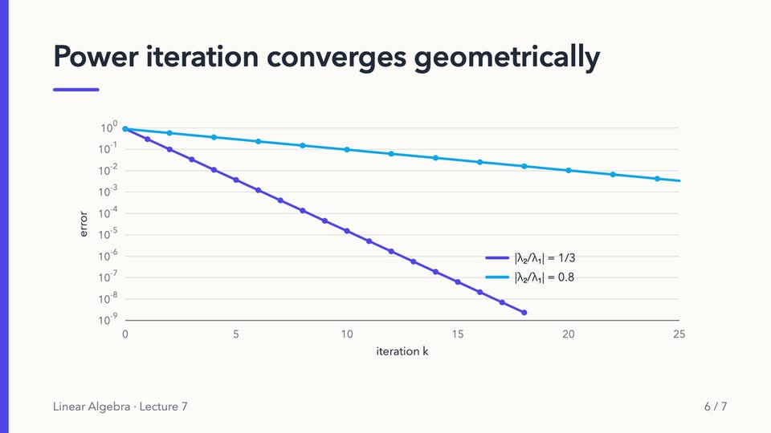
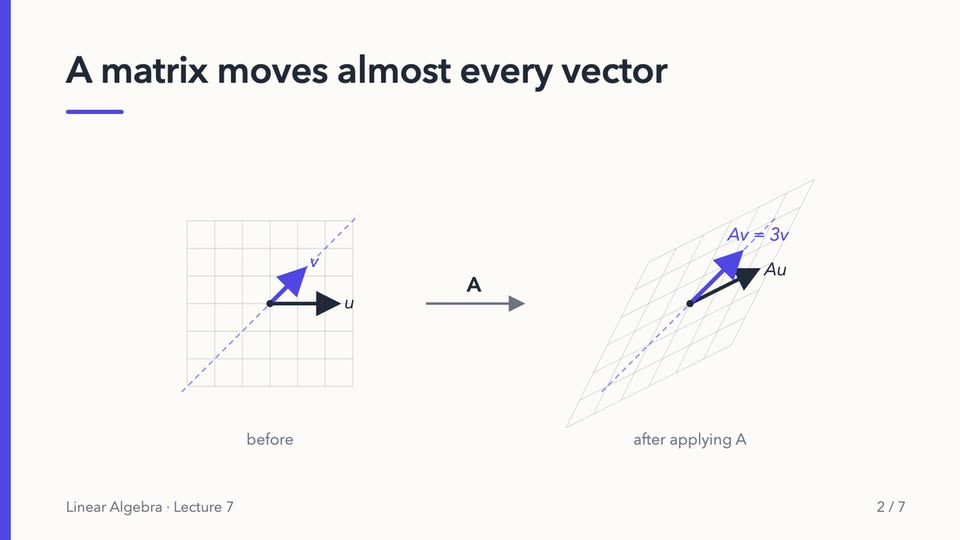
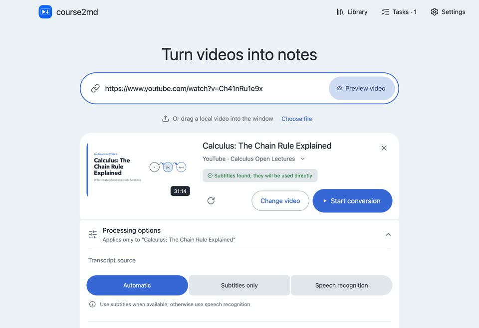
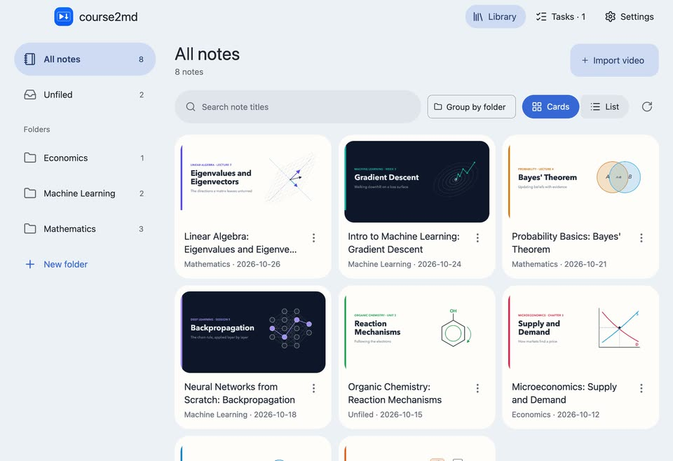
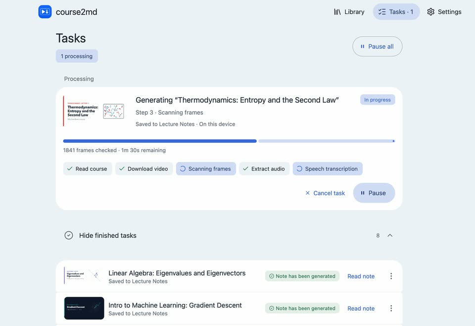

Subtitles first
When a video already has subtitles, they're used directly; no speech recognition needed.
Every lecture you've watched, ready to flip through again
course2md turns a whole lecture into an illustrated handout: a screenshot each time the slide changes, with what the lecturer said about it underneath. For YouTube and Bilibili videos, every section links back to that moment.



“But look at v, which points along the diagonal. After the transformation it is still on the same dashed line.”
The sample lecture was made for this page; its channel and video are fictional.

When a video already has subtitles, they're used directly; no speech recognition needed.
Slides alone don't explain the derivation, and subtitles alone have no pictures. Here every screenshot sits right above what the lecturer said about it.
With AI on, formulas, even spoken ones, are written as LaTeX and typeset. Copying a passage keeps each formula's LaTeX.
AI can add a translation under every paragraph, in any of eight languages.
Use any OpenAI-compatible service, a local Ollama server or your ChatGPT subscription. Off until you turn it on.
Pick several parts of a multi-part Bilibili video or a playlist at once. Tasks run in the background; pause, resume or reorder them.
Plain Markdown with screenshots, in a library on your computer with nested folders and title search. Export a web page any time. No account needed.
Ten light and dark themes, adjustable text size, and English, 简体中文, 繁體中文 or 日本語.


Speech is recognized locally by default. Audio or text leaves your computer only if you choose a cloud speech service or an AI service.
The desktop app includes the conversion engine and also needs ffmpeg. The first local transcription downloads a speech model (1–2.4 GB).
2.0course2md 2.0 is a rebuilt desktop app: preview before converting, background tasks you can pause and reorder, a library with folders, a reader with typeset formulas, and four interface languages. Release notes
brew install --cask mizorewww/tap/course2md-gui
winget install --id Gyan.FFmpeg -e
yay -S course2md-gui-bin
See the installation guide for details.
The command-line tool does the same conversion and installs alongside the desktop app. The two share your Bilibili and ChatGPT logins and the downloaded speech models; each keeps its own settings. Handy for batches and scripts, and it also runs on Intel Macs and Linux ARM64.
curl -fsSL https://raw.githubusercontent.com/mizorewww/course2md/main/install.sh | bash
CLI guide
Yes. It's open source under the MIT license, with no account, subscription or ads.
No. You only sign in to services you choose to use: a Bilibili account for some videos, or an AI service if you turn AI on.
AI is optional and off by default. With an OpenAI-compatible service you pay that provider for what you use; a local Ollama server costs nothing; a ChatGPT subscription works through the Codex login. course2md itself charges nothing.
In a library folder on your computer: each note is a course.md file with its screenshots, and you can export a web page, a .zip or JSON at any time. Add more library folders in Settings → Storage. Service keys are kept in the system keychain. Nothing is uploaded unless you choose a cloud speech or AI service.
About 1–2.3 GB on Apple Silicon and 2.4 GB on other systems, downloaded once. In mainland China they come from domestic mirrors, and downloads resume after interruptions.
Log in under Settings → Services & accounts → Bilibili account by scanning the QR code.